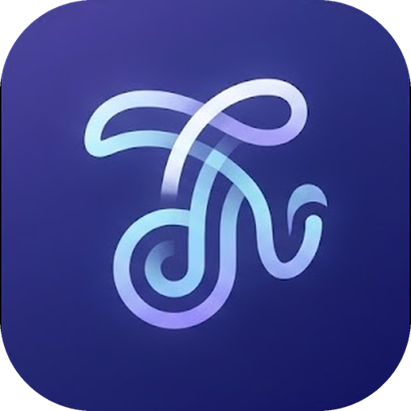

01 / 10
6 музыкальных площадок в одном окне
Ищи и слушай треки, не переключаясь между десятком сайтов.
Яндекс МузыкаSoundCloudSpotifyВК МузыкаDeezerYouTube
Смотреть видео
TuneifyБесплатный музыкальный плеер нового поколения — вся любимая музыка в одном приложении без подписок и рекламы.
Твоя музыка, твои настройки и любимые площадки — собраны в одном месте.
Ищи и слушай треки, не переключаясь между десятком сайтов.
Настрой настроение и любимый жанр: «Просыпаюсь», «В дороге», «Работаю», «Занимаюсь спортом» или «Засыпаю». Нажми «Запустить».
Смотреть видеоВстроенный локальный обход блокировок запускается автоматически — зарубежные площадки открываются сразу из коробки.
Смотреть видеоВставь ссылку на плейлист или альбом из Spotify, SoundCloud или Яндекс Музыки — или загрузи список / CSV. Перенос за пару секунд.
Смотреть видеоПолноэкранный режим с живым текстом песни, аккуратная тёмная тема и ничего лишнего на экране.
Смотреть видеоЗвук кружит вокруг головы. Настраивай интенсивность, скорость вращения и размер комнаты на лету.
◉ Погружение в звук Смотреть видеоПоставь свой видеоклип на задний план. Добавь снег, искры, дождь или звёзды и настрой яркость, количество и скорость частиц.
Смотреть видеоОтдельные шрифты для интерфейса, заголовков и текста песни. Загружай свои TTF, OTF или WOFF.
Смотреть видеоГрадиент, радуга, караоке, волна, неон и другие эффекты для активной строки, которая звучит прямо сейчас.
Смотреть видео27 достижений за прослушивание, избранное, оформление и профиль — со статистикой и прогрессом.
✦ 27 достижений Смотреть видеоНастрой атмосферу под себя — от минималистичного плеера до полноэкранного караоке.
Скриншоты Tuneify 1.4.0 · Нажми на изображение, чтобы открыть полностью
Плейлисты и альбомы из привычных сервисов переедут в Tuneify — просто вставь ссылку или импортируй список.
При первом запуске Windows может показать запрос брандмауэра для ciadpi.exe. Нажми «Разрешить доступ», чтобы Tuneify мог подключаться к музыкальным площадкам. Это нужно для корректной работы встроенного локального обхода блокировок.